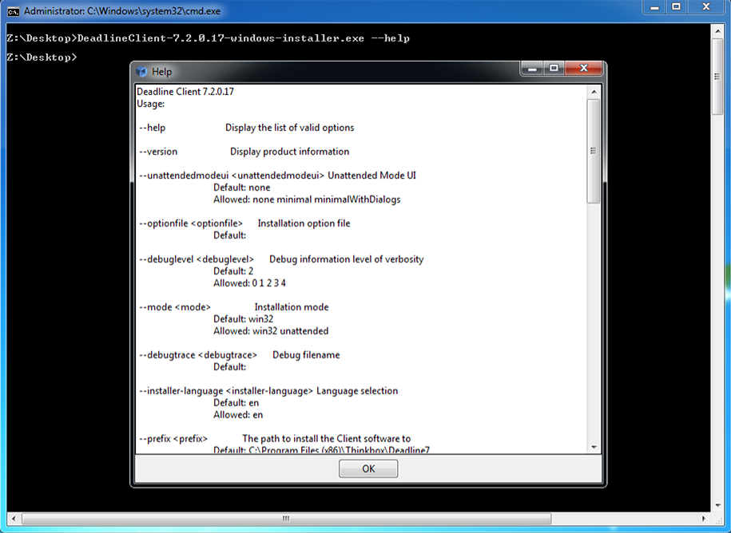

Software Deployment¶
Note
Topics covered in this page require you to have administrator/root access to your machines to install/deploy software.
Overview¶
Software Installation across multiple machines can quickly become a time consuming process for IT professionals. Deadline provides support and compatibility with industry standard Software Configuration Management solutions via it’s event plugin architecture. SCM solutions are best placed to provide comprehensive software deployment and configuration tools to support the various installation methods.
Alternatively, you can use Deadline via its Maintenance Job type to carry out basic software deployment tasks as well as any operation which requires something to be executed ‘just once’ on each of your Deadline Workers. This allows you to submit a job to Deadline with the number of tasks equating to the number of Workers in your queue, taking into account Workers on the allow list or deny list during job submission. Additionally, Remote Commands can be executed from the Deadline Monitor for adhoc execution on a remote machine and feedback is provided via the Remote Commands Panel.
Software Configuration Management¶
Deadline provides the possibility of integration with Software Configuration Management (SCM) systems such as CFEngine, Puppet, Saltstack, Chef, Ansible, SCCM, ARD, Casper Suite, Munki or indeed any SCM software via the Worker event callbacks. Deadline ships with Puppet and Salt Maintenance Jobs which can be submitted to Deadline via their Monitor submission scripts and also via Puppet and Salt Worker centric event plugins.
Platform Installation¶
Software installation differs between studio pipelines but also between OS platforms. Windows typically provides a Setup.exe program that asks you some easy questions and takes care of the job for you. While Linux software can be almost that easy to install, you will sometimes find software that seems to fight you every step of the way. It’s beyond the scope of this manual to cover all the problems you might run into (searching Google can help here!), but here are a few pointers. Software tends to come in “packages”. In the Windows world a package is a Setup.exe or a Program.zip file. On a Mac a package is a program.dmg or a program.pkg file. In the Linux world, there are several kinds of packages, and each distribution has its own preferred package format and manager.
Linux¶
The standard Linux package format (according to the Linux Standard Base) is RPM. An RPM package file normally will be named something like program-version-other.rpm. Another popular package format is DEB, the Debian software package. Debian packages and the Advanced Packaging Tool (APT) were the first to introduce several advanced features that are now common, such as automatic dependency resolution and signed packages. A Debian package file normally will be named something like program-version-other.deb.
There is a broad array of tools for working with DEB packages, but the one you will commonly use is apt-get, arguably the easiest of Linux package management tools. Typical apt-get commands for Debian and Ubuntu:
>>> apt-get install packagename
>>> apt-get remove packagename
>>> apt-get update
>>> apt-get upgrade
where packagename is the name of the package you wish to install, remove, update or upgrade all packages on a system.
On RedHat and Fedora, the YUM package manager is used. Typical yum commands might be:
>>> yum install packagename
>>> yum remove packagename
>>> yum update
>>> yum update packagename
On Mandriva Linux (formerly Mandrake and Connectiva), the urpm manager is used with typical commands such as:
>>> urpmi packagename
>>> urpme packagename
>>> urpmi.update -a
>>> urpmi --auto-select
Finally, a tar ball is a (usually compressed) archive of files, similar to a Zip file on Windows or a Sit on the Mac. Tar balls come in files that end in .tar, .tar.gz, or .tgz. To unpack a tar ball, use this command:
>>> sudo tar -xzvf filename.tar.gz
where filename is the name of the tarball file received. This command will not install the software, it will only extract the archived files. It is your job then to find the README file or INSTALL file and read its instructions for installation. If the archive contains binaries there will usually be a setup script (often called install.sh) that you must execute with root privileges. Very often, software delivered in tar balls is not in executable form, but in source code, which must first be compiled before it can be installed.
macOS¶
Typical macOS *.dmg and *.pkg commercial and open-source software deployment solutions:
macOS Installer, executed via a shell script, possibly by macOS Automater.
Platypus to wrap native, Ruby, Perl, Python scripts as a standalone bundled app.
There are also many tools to create an installer package from an “Install macOS.app” or *.dmg file in preparation to be deployed such as Createosxinstallpkg.
Windows¶
The remainder of this document will explain various techniques to deploy software on Windows OS based machines.
Unattended Installation¶
A popular approach when a large quantity of software/configuration is required is to create a pre-defined OS image of a known ‘good’ machine and use a tool such as the FOG Project or Microsoft’s Remote Installation Services to deploy the computer image across your network. There are software installer packages which typically provide the means to install their ‘wrapped’ software in a silent and/or unattended manner. The open-source project Unattended attempts to support many of these installer systems, whilst Silent Install Builder provides a commercial solution.
Common Installers¶
There are many commercial software installers commonly in use which all have some kind of silent install option:
InstallShield. InstallShield has the following Command-Line Parameters.
Inno Setup. Inno Setup has the following Setup Install Parameters.
Nullsoft Installer (NSIS). NSIS has the following Silent Options.
Windows Installer MSI/MSP. MSI has the following Silent Install Options.
InstallBuilder (Deadline uses InstallBuilder)
Probing Installers¶
Beyond the common installer systems used, it is sometimes necessary to manually probe an installer or application for hidden command line flags. Several approaches are possible here.
Manual Command Prompt.
Try executing the installer/application at the command line with administrator rights. Try all of these possible flags:
installer.exe /? installer.exe -? installer.exe /help installer.exe -help installer.exe --help installer.exe /silent installer.exe -silent installer.exe --silent installer.exe /s installer.exe -s installer.exe --s
Universal-Silent-Switch-Finder (USSF) may find a hidden flag. An old style application, which you may need to search the internet to download, possibly from one of these locations; link1, link2 or link3. In the example below, the 3ds Max 2016 Extension 1 install executable is actually a WinRAR file with a silent install “/s” flag being available.
Process Explorer available here can be useful. Download and run ProcessExplorer, run the installer or application executable you wish to probe, right-click in ProcessExplorer, click on Properties and String Values, then copy and paste this entire list of any string variables found in the binary executable to a text editor of choice, then search for anything starting with the characters: “/”, “-” or “–”, which will possibly find any command line parameters. For example, Autodesk’s VREDPro.exe and the VREDServerNode.exe have an un-documented “-prepython” flag which was found by this approach.
RePackaging¶
There are several tools around which can take a snapshot of a machine’s state before and after a manual installation, compute the differences between the states, and bundle them up as an “installer”. This approach tends to be unreliable, requiring re-packaging for every new release of an application. An installer’s behavior may depend on the exact initial state of the machine, such as the OS version or the presence/absence of other installed software. So the repackaged installer will almost never do exactly the same thing that a fresh installation would, unless the target machine is completely identical to the original machine. Repackaging isn’t recommended.
Click Automation¶
Far from ideal, software does exist to emulate the keyboard and mouse clicks for an installer to successfully execute. There are commercial software solutions such as Silent Install as well as open source Win32 API based scripting solutions such as AutoITScript.
Remote Commands¶
Deadline Monitor or DeadlineCommand can be used to execute Remote Commands on a machine running Worker and Pulse. Any kind of script or executable could be used here, assuming Deadline Launcher and Worker has the permission to execute the contents of the script on the target machine(s). Software wrappers are available to ‘compile’ a script into an executable, which can be used to also embed user credentials. Consider using cx_Freeze to ‘freeze’ the state of a Python script and to ensure it works on any platform that Python supports.
Once you have a working, network accessible script, it could be executed ad hoc such as:
cmd /C "/path/to/batch_script_to_install_software.bat"
The Remote Commands Panel shows all pending and completed remote commands that were sent from the Monitor. When sending a remote command, if this panel is not already displayed, it will be displayed automatically (assuming you have permissions to see the Remote Command panel). If a command returns a non-zero exit code, the command will be interpreted as having failed.

Maintenance Job¶
Any Deadline job can be submitted as a Maintenance Job. However, the option is only exposed in the UI submitters for the CommandLine and Python plugins. However, another scripting language such as Perl or Ruby could easily be created to support this workflow. The Manual Job Submission section explains that maintenance jobs are special jobs where each task for the job will render on a different machine in your farm. This is useful for performing benchmark tests, installing new software, synchronizing files to each machine, etc. When a maintenance job is submitted, a task will automatically be created for each Worker, and once a Worker has finished a task, it will no longer pick up the job. Note that if you specify an allow list or deny list in the job info file, the number of tasks that are created for the Maintenance job will equal the number of valid Workers that the job could render on.
Examples¶
Autodesk¶
Many of Autodesk’s software installers allow a network deployment to be created, which creates a full copy (network located) of the software to be installed and provides a “silent install” shortcut, which can simply be double-clicked by a user with permissions to install or executed via a SCCM solution, Deadline Remote Command or Deadline Maintenance Job. Autodesk provides specific guidance here:
Once built, deployments can later be modified, in the case of an extension/service pack becoming available.
Additionally, Autodesk service pack / hotfix / extensions (msi/msp) files can typically be silently installed as well:
msiexec.exe /p "3dsMax2016_SP1.msp" /qn /norestart /log output.log
This should work with any of the EXE update releases that Autodesk provides. You will need to convert the EXE file to an MSP with the following command:
AutoCAD_2013_SP1.1_64bit.exe /e ./AutoCAD_2013_SP1.1_64bit.msp
Note, there has been the odd exception, where an EXE file is actually a WinRAR EXE file, which after ‘extracting’ the files, you will then be able to run an EXE or MSP file.
Chaos Group¶
Here are silent install instructions for V-Ray for 3ds Max, V-Ray for Maya, and V-Ray Standalone.
Here are instructions to run V-Ray for 3ds Max or Maya/Standalone from an arbitrary location.
Render Legion¶
To install the Corona Renderer software silently into 3dsMax, you should first run the installer manually, select the option to just unpack, then you will get a folder structure that you can copy directly into your 3dsmax folder to perform the installation. The copying of the files could be automated via a simple batch or Python script, executed as a Remote Command or Maintenance Job in Deadline. It’s noted from the developers of Corona that the option for silent install is not in the installer because the customer needs to agree to the EULA at least once when unpacking.

{kind=link}
{kind=link}
{kind=link}
{kind=link}
{kind=link}